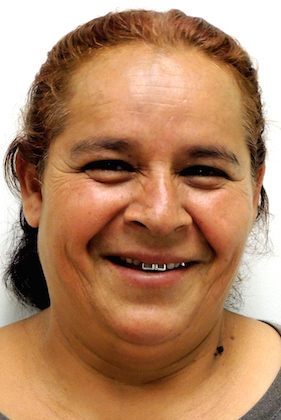
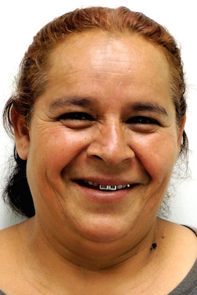

Hola, me llamo Maria y soy una enfermera, pero también una mamá con 2 hijos, uno de 10 y otro de 14 años.
Cada Secreto ha sido puesto a prueba por mamás como usted. Otras familias, como la suya, usan estos Secretos para mejorar su alimentación y comidas con sus familias. Así mismo, estudios conducidos por investigadores universitarios concuerdan que ¡estos Secretos realmente funcionan!
Estos Secretos son pasos chicos y sencillos que usted puede tomar. Y, de inmediato estos Secretos le traerán GRANDES beneficios a través de una mejor alimentación. Estos Secretos no cuestan nada, al contrario, ellos le ahorrarán dinero.
 
"Las recetas son muy versátiles. Estamos cocinando diferente y más saludable."
"Ahora mi hijo me ayuda con las comidas. Es divertido haciéndolo juntos."
"Estamos cenando juntos en familia y hablando acerca de lo transcurrido durante el día"
"Mi relación con mis hijas se ha estrechado. Vamos de compras juntas y preparamos nuestras comidas enfocadas alrededor de verduras."
"La calculadora de azúcar nos ayudo a reducir el consumo de refrescos"
"He usado los consejos de como guardar las verduras para que duren mas."
"Toda la familia esta aprendiendo a cocinar, en vez de ir por comida chatarra."
"Hay muchas ideas para desayunos y bocadillos ricos."
Estoy aprendiendo cosas nuevas acerca de la comida e ideas para servirlas, y me estoy divirtiendo haciéndolo."
"He compartido recetas y secretos con mi familia y amistades. Incluso, hice una presentación acerca de estos materiales en mi complejo de apartamentos. Ahora mi iglesia me ha pedido que hable acerca de la aplicación de teléfono y de una alimentación saludable"
"Los Secretos para mejorar las compras son excelentes."
"Estoy aprendiendo como leer las etiquetas de los paquetes y no solo comprar lo que se vea bueno."